Watch every TCP and UDP connection on your Linux system — in real time, with PID, process name, direction, and close timing. No eBPF. No ptrace. No kernel modules.
$ sudo proc-trace-net -ctu 1234 sshd <root> TCP 10.0.2.15:22 ← 203.0.113.7:41002 2341 systemd-r <root> UDP 10.0.2.15:46012 → 8.8.8.8:53 3892 curl <rick> TCP 10.0.2.15:54321 → 93.184.216.34:443 4401 dockerd <root> TCP 10.0.2.15:55001 → 52.1.0.1:443 3892 curl <rick> TCP 10.0.2.15:54321 × 93.184.216.34:443 0.342s
Every TCP/UDP connection on the machine — not just children of your shell. One netlink socket, full visibility.
/proc/net/tcp inode lookup maps each connection to its owning process name and PID.
→ outbound, ← inbound — direction is determined by which side initiated the connection.
The -t flag shows elapsed duration when a connection closes. Spot long-lived or hung connections instantly.
The -U flag shows ESTABLISHED, FIN_WAIT, and TIME_WAIT transitions as they happen.
Single static binary. Uses a netlink socket + /proc only — no eBPF, no ptrace, no kernel modules.
Which process opened that outbound connection to an unexpected IP? When a script runs, does it phone home? Which service is hammering your DNS resolver with queries?
Existing tools are painful: ss and netstat are polling-based and miss short-lived connections. tcpdump captures packets but doesn't map them to PIDs. eBPF requires kernel 5.8+ and significant setup.
proc-trace-net answers these questions with one command and one static binary — subscribing to the kernel's conntrack event stream rather than polling or intercepting packets.

Watch outbound connections from untrusted scripts or packages before you trust them. Does it call home? You'll see it immediately.
See exactly which process is connecting where, in real time. No more guessing from ss snapshots that miss short-lived connections.
Use -p PID to trace only one service's network traffic. Watch nginx workers, a microservice, or any process group in isolation.
Count connections in hot paths, spot chatty processes making excessive DNS lookups, or identify services with unexpected connection patterns.
Trace docker pull, docker build, and docker run network activity from the host — see every registry and CDN endpoint contacted.
Understand how programs use the network at the syscall level. A great way to explore unfamiliar daemons or understand what a system is doing on the wire.